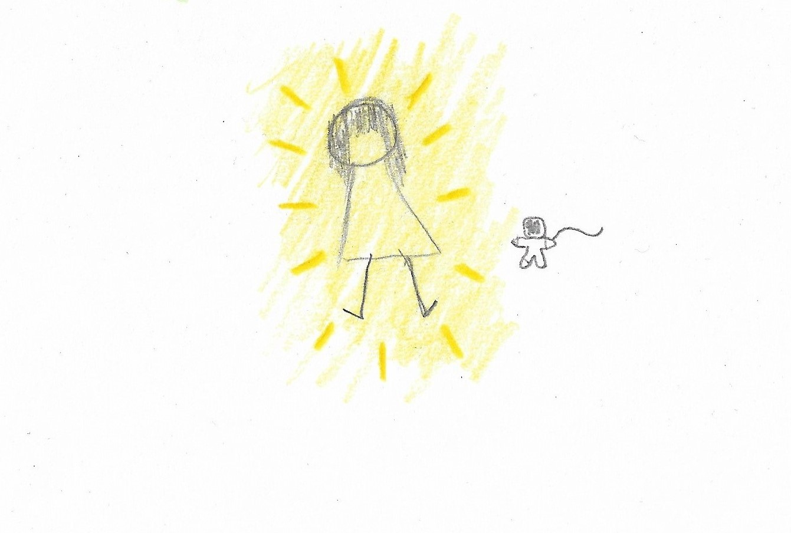

LA ODISEA
Una aventura por el universo que dibuja tu existir.
"Rondando por el universo en una aventura completamente desconocida para mi, te encontré, tan pequeña, tan hermosa y tan misteriosa. Curiosamente en el lugar más oscuro del universo, pero que radiaba el color de tu personalidad. Había algo diferente en ti, completamente. No parecías ni ser de este universo ni de la misma realidad en la que yo me encontraba, era todo completamente diferente. Era algo bello, extraño y a la misma vez desconocido. Cuando te encontré, radiabas un color verde tan único y hermoso, un verde radiante como el color de la vida en un planeta. El color verde de la vida, de la abundancia, de la naturaleza..."
"Hubo un momento, en el que mientras más tratabas de conocerte a ti misma en este universo, toda tu apariencia cambio a un color azul, pero no cualquier azul. Un azul brillante y claro, como el azul en el centro de los cuasares, o el azul que acompaña esa estela de brillo en las estrellas fugaces. Un azul que combina perfectamente con el espacio, con el color de la galaxia, el color que alumbra completamente a toda la galaxia. En un punto, nuestros colores convergieron, se univeron, formando así la combinación más preciosa que pudiese haber en un universo oscuro y desconocido. Es increíble como tu inmensa existencia, tan incomprendible y desconocida, haya creado una combinación que le dio forma a todo alrededor del infinito universo. Infinito como tu perfección..."
"Con el paso del tiempo, todo en ti cambiaba como es normal en el universo. Eres alguien constante y jamás estática, tu color una vez más cambió. Ahora eres amarilla, un amarillo radiante como el mismo Sol que calienta cada rincón del universo sin importar su infinita distancia ni tamaño. Tan grande eres que cada rayo de tu resplandeciente color viaja a velocidad increiblemente imposible de calcular y ver con mis ojos, estos ojos humnos incapaces de ver más allá de lo que eres, alguien de otro mundo, otro universo completamente diferente. Eres ahora el amarillo de un radiante Sol, un Sol que alumbra cada rincón oscuro, que calienta cada espacio frío y solitario. Un sol tan perfecto e inmenso..."
Porque siempre serás mi universo entero...